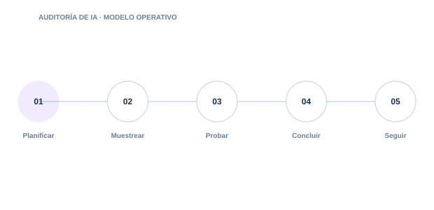

05 · PILAR
Auditoría de IA
Evaluar gobierno, controles técnicos y evidencias de forma reproducible.

Directorio del pilar4 guías · acceso directo
05.0105.0205.0305.04
Auditoría ISO/IEC 42001
Prepara y ejecuta auditorías internas del SGIA orientadas a evidencias.
Auditoría técnica de IA
Examina arquitectura. configuración. flujos. permisos. registros y comportamiento.
Recogida de evidencias
Obtén evidencias suficientes. íntegras. trazables y repetibles.
Informes de auditoría
Comunica el riesgo con claridad y permite verificar la remediación.
Autoevaluación complementaria
GRCReal ↗ISO/IEC 42001 en GRCReal
EvaluarChecklist ISO 42001Evalúa controles clave de un sistema de gestión de inteligencia artificial.Abrir ↗AprenderQuiz ISO 42001Comprueba conocimientos sobre gobierno y sistema de gestión de IA.Abrir ↗ContextoMarco de Gobierno de IAVisión estructurada de gobierno, riesgo, controles y evidencia para IA.Abrir ↗
01
PlanificarControl y evidencia aplicable
02
MuestrearControl y evidencia aplicable
03
ProbarControl y evidencia aplicable
04
ConcluirControl y evidencia aplicable
05
SeguirControl y evidencia aplicable
Cada guía incluye explicación, implantación, controles, evidencias, errores habituales, métricas y referencias.